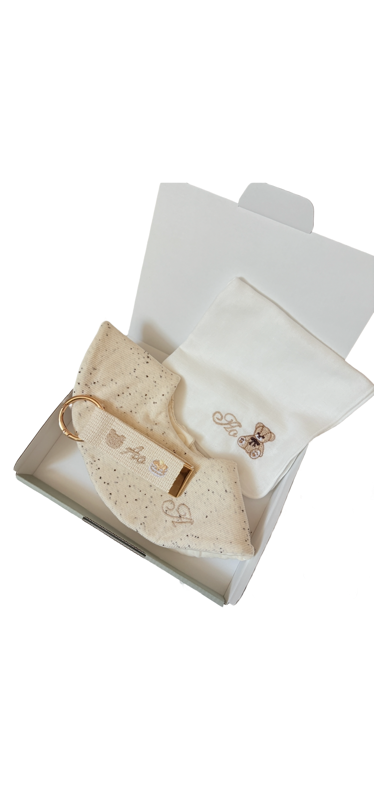

出産祝いで本当に喜ばれる
名入れギフトの選び方

親しい友人や家族に赤ちゃんが生まれたとき、出産祝いを何にしようか迷うことがありますよね。「どんなものなら使ってもらいやすいかな」「いつ渡すのがよさそう？」。この記事では、相手の体調や予定に合わせた贈り方や予算の目安、リルイロの出産祝いギフトセットをご紹介します。
出産祝いを贈るタイミング
出産祝いは、無事に生まれた知らせを受けてから贈るのが一般的です。産後1ヶ月頃までが目安とされますが、ママや赤ちゃんの体調、ご家族の予定を優先して大丈夫です。
ご友人なら、産後すぐに急いで届けなくても、相手の体調や暮らしが落ち着いてから、会えたときに手渡す方法もあります。訪問する場合は、先に都合を聞いておくと安心です。
贈る時期が少し遅くなっても、お祝いの気持ちは変わりません。「早く届けなきゃ」と焦らず、相手が受け取りやすいタイミングを選んでくださいね。
出産祝いの金額相場は？
金額はお相手との関係性で変わります。あくまで一般的な目安ですが、参考にしてみてください。
・友人・同僚 5,000円〜10,000円
・兄弟姉妹 10,000円〜30,000円
・親戚（甥・姪など） 10,000円〜30,000円
・グループ（連名）で贈る場合 1人あたり3,000円前後を目安に
金額はあくまで目安です。相手との関係やご自身の予算に合わせて選んで大丈夫。友人同士なら、何人かでまとめて贈る方法もあります。
本当に喜ばれる出産祝いの選び方 3つのポイント
「もらってうれしかった」という声が多いギフトには、共通点があります。選ぶときの3つのポイントをご紹介します。
① 毎日使う「実用品」を選ぶ
おむつ・スタイ・タオル・ガーゼなど、赤ちゃんのお世話で毎日使うものは、いくつあっても助かる定番。消耗品に近いものほど、実は喜ばれます。
② 「名前入り」で特別感をプラス
同じ実用品でも、赤ちゃんのお名前が入っているだけで、世界にひとつの特別な贈り物に。「わざわざ自分のために選んでくれた」という気持ちが伝わります。名前が読みにくいお名前のときは、ふりがなを添えてもらうと親切です。
③ ママも笑顔になれるものを
赤ちゃん用品はもちろん、毎日がんばるママがちょっと嬉しくなるもの——おしゃれで持ち歩きたくなるおむつポーチのように、「ママが使うベビーアイテム」もおすすめです。
名入れギフトが「特別な一つ」になる理由
lil iro baby（リルイロ）では、赤ちゃんのお名前を刺繍でお入れした、世界にひとつだけの名入れアイテムをお作りしています。出産祝いに人気のアイテムをいくつかご紹介します。
出産祝いの3点セットは、贈る相手やご予算に合わせて2種類から選べます。どちらもネームタグにお名前を刺繍してお届けします。
ママ用のプレゼントとして選ばれることが多いのが名入れおむつポーチ。おむつやおしりふきをまとめて入れられて、お出かけのバッグにすっと収まります。お名前入りだから、支援センターやお友だちとのお出かけでも、さりげなく特別。
プチギフトや、ほかの贈り物に添えるなら名入れネームタグもおすすめ。ベビーリュックや通園バッグ、母子手帳ケースなどに付けられて、長く使ってもらえます。少しあらたまった記念の贈り物には、お名前と誕生日を刺繍でお入れする刺繍の命名書も。
リルイロの名入れギフトが選ばれる理由
・お名前は色あせしにくい刺繍で。長く使っても風合いが続きます
・お作りする前に字体シミュレーション画像でご確認いただけるので安心
・ギフトラッピング対応。届いてすぐ渡せる状態でお届けします
・お名前が決まってからのオーダーでOK。出産の報告を受けてからでも間に合います
出産祝いは、値段の高さよりも「あなたのために選んだよ」という気持ちが伝わることがいちばん。お名前という世界にひとつの要素を添えて、記憶に残る贈り物を届けてみませんか。
お名前を刺繍でお入れする、出産祝いの名入れギフト
view item